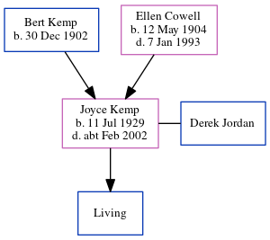

Joyce Margaret A Jordan (née Kemp) 1929 - c2002
[ Home ] | [ Calendar ] | [ Surnames Index ] | [ Census Index ] | [ Family History ]The older of 2 children of Bert Kemp (a farm bailiff & tractor driver) and Ellen Cowell, Joyce Kemp, the second cousin once-removed on the mother's side of Nigel Horne, was born in Thanet, Kent, England on Jul 11, 19291,2,3 and. She married Derek Jordan (with whom she had 1 surviving child, David M) in Thanet around Nov 19524. On Sep 29, 1939, she was living at 6 Woodchurch Cottages, Margate, Kent, England1.
She died c. Feb 2002 in Thanet3.
Parents
- Bert E was born on Dec 30, 1902
- Ellen May was born on May 12, 1904
Citations
- 1939 Register - Findmypast (was the daughter of the head of the household)
- England & Wales births 1837-2006 - Findmypast
- England & Wales deaths 1837-2007 - Findmypast
- England & Wales Marriages 1837-2005 - Findmypast
Media
England & Wales marriages 1837-2005 - BMD/M/1952/4/AZ/000654/057
England & Wales deaths 1837-2007 - BMD/D/2002/1/85025271
1939 Register - TNA-R39-1752-1752A-002-26
Family Tree
Generated by ged2site. Last updated on Jun 11, 2024